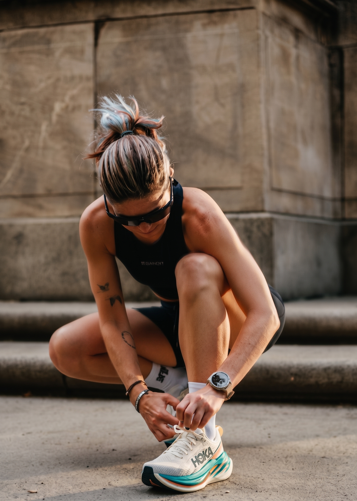

NIGHT RUNNING CURATION
RUN AFTER
DARK.
도시의 밤, 나에게 맞는 러닝 코스를 찾다. 조도 · 경사 · 편의시설 · 안전 쉼터를 기준으로 큐레이션한 서울 야간 러닝 코스 9선과, 함께 달릴 러닝 메이트까지.
오늘의 베스트 루트를 계산하는 중…
WHERE DO YOU WANT TO RUN TONIGHT?
AREA · 지역
SAFETY · 안전
TERRAIN · 지형
FACILITIES · 편의시설
TONIGHT'S RUN
오늘 밤 추천 코스
안전 점수 기준으로 엄선한 6개 루트. 카드의 하트를 누르면 MY RUN에 저장됩니다.
SAFETY FIRST
밤길, 데이터로 확인하고 달리세요
모든 코스는 조도 · 쉼터 · 유동인구 · 편의시설 네 가지 축으로 점수화됩니다.
NETWORK SAFETY INDEX
※ 본 지표는 큐레이션 정보 기반이며, 실제 조도 및 시설 운영 상태는 현장 상황에 따라 달라질 수 있습니다. 야간 러닝 시 밝은 복장과 전조 라이트를 권장합니다.
밝은 길을 우선합니다
가로등 조도 4점 미만 코스는 '밝은 길' 태그를 붙이지 않습니다. 어두운 구간은 코스에서 제외하거나 주의 구간으로 표기합니다.
쉼터는 500m 이내에
루트 어디에서든 벤치 · 정자 · 편의점으로 5분 안에 도달할 수 있는지만 검증합니다.
"안전하다"고 말하지 않습니다
절대적 안전 대신 수치와 근거를 보여드립니다. 별점과 체크리스트는 모두 공개된 기준표에서 계산됩니다.
NIGHT COACH에게 물어보세요
AI PREVIEW · Gemini 연동 예정현재 화면은 실제 코스 데이터로 만든 목업 응답입니다 ·
RUN TOGETHER
혼자보다 함께, 밤길이 더 안전해집니다
요일 · 시간 · 페이스가 맞는 러너를 찾고, JOIN 한 번으로 참여 신청이 끝납니다.